IDM Backup Manager V0.9.9 (Beta)
Please Remember this is Beta Version and may Contain Bug.
Copyright © 2012-16 Gajjar Tejas
1. Introduction
2. Features
4.1. Backing up IDM
4.1.1. Full Backup
4.1.2. Custom Backup
4.1.3. List Backup
4.2. Restoring IDM
4.3. IDM List Manager
4.3.1. Analyzing The File
4.3.2. Joining File(Experimental)
4.3.3. Removing File
4.3.4. Exporting List
4.4. IDM Cleaner
4.4.1. Custom Clean
4.4.2. Full Clean
4.5. Password Cleaner
5. Setting
7. Support, Contact & Bug Reporting
IDM Backup Manager is free software that can backup files from Internet Download Manager and restore then later when you want. Also include cleaner and IDM List Manager. IDM List manager expert report in various format and allow force to join unfinished downloaded file and much more.
1. Backup and Restore Whole Internet Download Manager.
2. Backup Custom elements for Backup like Setting, Unfinished Downloaded parts, Grabber data etc.
3. Password protection backup file with AES Encryption.
4. Variable compression rate, with six compressions Level.
5. One click Backup and Restore.
6. Profile Conversion Support so it can be used with different Computer for backup and restore.
7. To Clean History, Logs and Unfinished Download Data Files.
8. Download List Manager is allow to use Force to Join Unfinished Downloaded Files, Expert in various format, Remove Download from List and much more.
1. Windows 98, Windows xp, Windows vista and Windows 7 (x86 and x64 both).
2. Intel Pentium 166MHz or above.
3. Minimum 64MB memory.
4. At least 5MB free hard disk space.
4.1 Backing up IDM
4.1.1 Full Backup
Open IDM Backup Manager and select Backup tab as shown in figure:
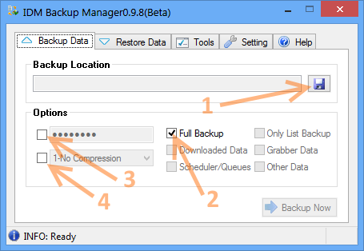
1. Choose File Location Where you wish to save backup file.
2. Check Checkbox to Full Backup.
3. Fill Password (optional).
4. Choose Compression Level (optional).
4.1.2 Custom Backup
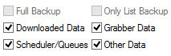
1. Choose File Location Where you wish to save backup file.
2. For Custom Backup just uncheck all item and Check as you want to backup shown in screenshot.
3. Fill Password (optional).
4. Choose Compression Level (optional).
4.1.3 List Backup
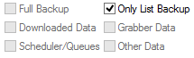
1. Choose File Location Where you wish to save backup file.
2. For List Backup just uncheck all item and Check Only List Backup shown in screenshot. Please remember that in this backup mode no data will be backup only IDM List will be backup.
3. Fill Password (optional).
4. Choose Compression Level (optional).
4.2 Restoring IDM
4.2.1 Restoring data
Open IDM Backup Manager and select Restore tab as shown in figure:
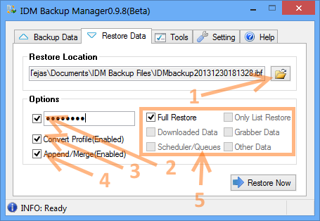
1. Choose backup file. (Default extension is ibf – IDM Backup File).
2. Choose password if it is encrypted.
3. Choose Convert Profile options if backup is from another computer, different user account. You do not need to convert your native backup.
4. Append/Merge option will not delete users existing data.
5. Choose this option to restore data as your choice.
6. This will show your IDM Backup Manager File Information.
4.2.2 Backup File Information
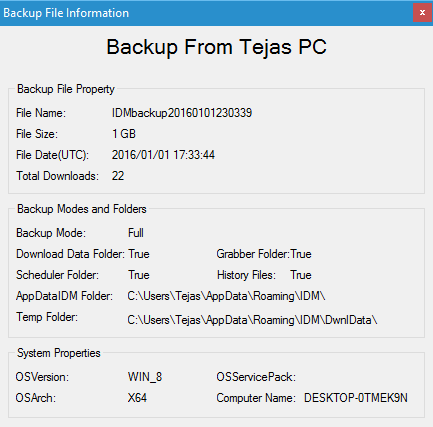
4.3 IDM List Manager
Go to Tools Menu à and run IDM List Manager. It may take some time to analyze IDM List. Screenshots of IDM List Manager is shown below:
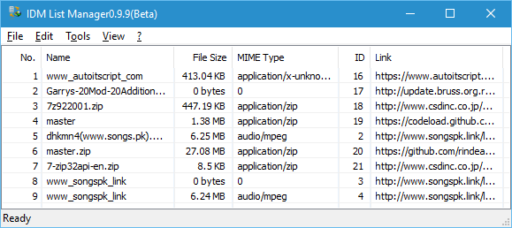
4.3.1 Analyzing the File
Press (File Menu à Analyze) Analyze (Refresh) file to refresh status of:
1. List According To Download:
a) List All Download
b) Finished Download
c) Unfinished Downloads and
d) Unfinished Download Data
2. List According To Categories
a) All
b) Compressed
c) Documents
d) Music
e) Video and
f) Other Categories which is Manually Created By User
4.3.2 Joining FILE (Experimental)
Go to Viewà Listà and select Unfinished Download Data and Then analyze then right click appropriate item to force join it as shown below screen shot.
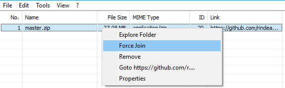
4.3.3 Removing File
Right click on item and Press remove to remove selected file item will deleted from IDM List. Be Careful!
4.3.4 Exporting List
Item will Currently on List will be exported. Then Click on Expert Button There is Four Mode as Shown in menu:
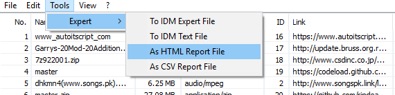
1. AS html Report File
2. As csv Report File
3. To IDM Export File
4. To IDM Text File
4.4 IDM Cleaner
Go to Tools Menu and run IDM Cleaner. IDM Cleaner is cleans the unfinished download, grabber data and History and Logs. IDM Cleaner will not remove IDM List. Be Careful!
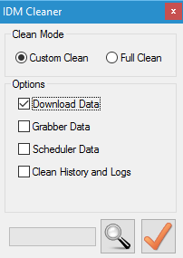
There are two modes:
4.4.1 Custom Clean
Clean Download data, Grabber data, Scheduler data, history and logs as per requirements. A conformation dialog will appear Press Yes to clean. Be Careful!
4.4.2 Full Clean
Clean Whole Folder. A conformation dialog will appear Press Yes to clean.
4.5 PASSWORD CLEANER
Go to Tools Menu and run Password Cleaner. Password cleaner remove all Sites Logins password from IDM. Be Careful!
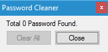
4.6 Add Extra Files Types
Go to Tools Menu and run Add Extra Files Types in Categories. This will automatically add extra defined files types to IDM Categories.
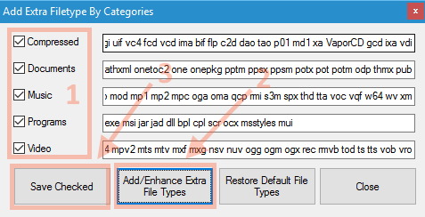
Setting tab allow to change IDM Default profile while backing up/Restoring IDM. In addition, you can change Log File path and Backup Folder. Below Screenshot is shown:
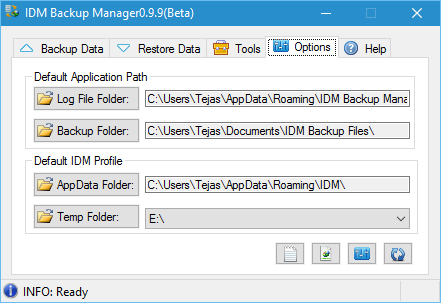
1) Default Application Path
a. Log File Path: Where you can save log file. Default Path is @User Profile\AppData\Roaming\IDM Backup Manager\LogFile.log
b. Backup Folder: Where backup File saved by default Path is @User Profile \Documents\IDM Backup Files\
c. Setting (ini) File: Default Path(it cannot changed) is @User Profile \AppData\Roaming\IDM Backup Manager\SettingFile.ini
2) Default Profile
a. AppData Folder: IDM Default Profile Folder. Default Path is @User Profile\AppData\Roaming\IDM\
b. DonlData Folder: Where Unfinished Downloads data saved. By default path is @User Profile\AppData\Roaming\IDM\DwnlData\
3) More Setting
a. Click on Setting icon to change Some more setting:
i. Log File will append on every Session or Not (On startup).
ii. Restart IDM every time on restore or Not.
b. Click on  Association
icon to associate .ibf (IDM Backup File) file.
Association
icon to associate .ibf (IDM Backup File) file.
c. Click on Restore default icon to default all setting including default profile.
1. Please Close IDM then run backup/restore. Otherwise backup restore will unsuccessful.
2. When you restore data Previous Profile will be override/Deleted if Append/Merge is not selected.
3. Default there will be no compression on Backup file.
4. When you reinstall Operating System, move to other user account or backup file is another system you need to convert profile while restoring Backup.
5. Is admin mode required for backup and restore data? Yes, only for Admin Account.